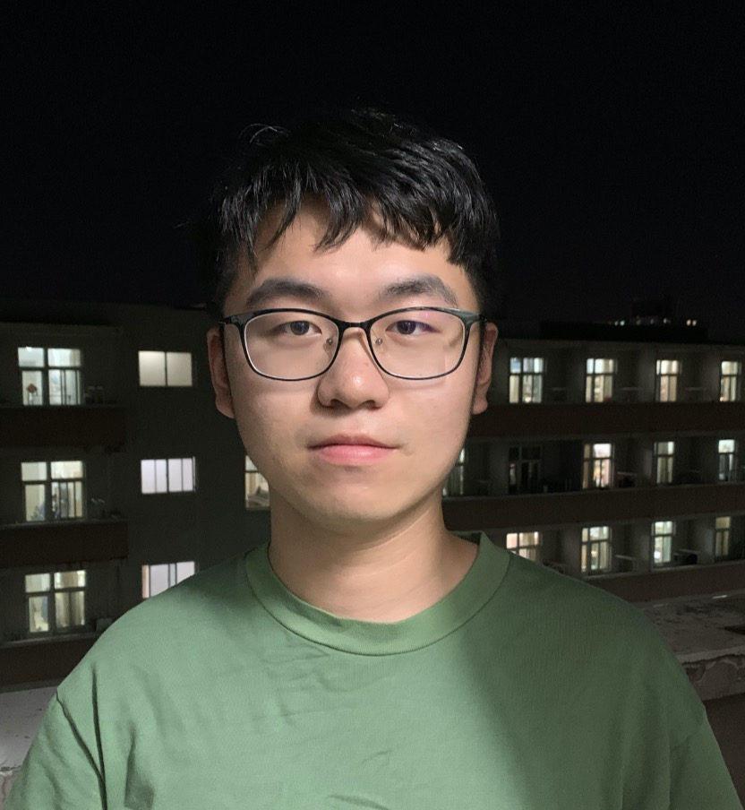

|
Chen ZHANG (张晨)
Email: zhangch [AT] pku [DOT] edu [DOT] cn
|

[CV] [Google Scholar] [Github]
|
I am a third-year Ph.D. student at Wangxuan Institute of Computer Technology, Peking University, advised by Prof. Yansong Feng and Prof. Dongyan Zhao. I received my B.Sc. degree from School of Electronic Engineering and Computer Science, Peking University in 2021. My research interests are complex reasoning with LLMs and cross-lingual NLP for low-resource languages.
|
News
- [November 2023] We release MC^2, a multilingual corpus of minority langugaes in China. [github] [arxiv]
- [May 2023] Our papers on multi-answer question answering and causal reasoning are accepted by ACL 2023.
- [April 2023] Check out our new project Lawyer LLaMA! We adapted LLaMA to the legal domain. [github] [arxiv]
- [January 2023] Our papers on cross-lingual question answering and hybrid fact checking are accepted by EACL 2023.
|
(* Equal Contribution)
|
MC^2: A Multilingual Corpus of Minority Languages in China
2023
Chen Zhang*, Mingxu Tao*, Quzhe Huang*, Jiuheng Lin*, Zhibin Chen, Yansong Feng
[arxiv] [github]
|
|
Lawyer LLaMA Technical Report
2023
Quzhe Huang*, Mingxu Tao*, Zhenwei An*, Chen Zhang*, Cong Jiang, Zhibin Chen, Zirui Wu, Yansong Feng
[arxiv] [github]
|
|
Relation-Aware Question Answering for Heterogeneous Knowledge Graphs
EMNLP 2023 (Findings)
Haowei Du, Quzhe Huang, Chen Li, Chen Zhang, Yang Li, Dongyan Zhao
TBA
|
|
How Many Answers Should I Give? An Empirical Study of Multi-Answer Reading Comprehension
ACL 2023 (Findings)
Chen Zhang, Jiuheng Lin, Xiao Liu, Yuxuan Lai, Yansong Feng, Dongyan Zhao
[paper] [github]
|
|
The Magic of IF: Investigating Causal Reasoning Abilities in Large Language Models of Code
ACL 2023 (Findings)
Xiao Liu, Da Yin, Chen Zhang, Yansong Feng, Dongyan Zhao
[paper] [github]
|
|
Cross-Lingual Question Answering over Knowledge Base as Reading Comprehension
EACL 2023 (Findings)
Chen Zhang, Yuxuan Lai, Yansong Feng, Xingyu Shen, Haowei Du, Dongyan Zhao
[paper] [github]
|
|
UnifEE: Unified Evidence Extraction for Fact Verification
EACL 2023
Nan Hu, Zirui Wu, Yuxuan Lai, Chen Zhang, Yansong Feng
[paper] [github]
|
|
Knowledge-Enhanced Iterative Instruction Generation and Reasoning for Knowledge Base Question Answering
NLPCC 2022
Haowei Du, Quzhe Huang, Chen Zhang, Dongyan Zhao
[paper] [preprint]
|
|
Extract, Integrate, Compete: Towards Verification Style Reading Comprehension
EMNLP 2021 (Findings)
Chen Zhang, Yuxuan Lai, Yansong Feng, Dongyan Zhao
[paper] [github]
|
|
A review of deep learning in question answering over knowledge bases
AI Open 2021, Volume 2
Chen Zhang, Yuxuan Lai, Yansong Feng, Dongyan Zhao
[paper]
|
|
Why Machine Reading Comprehension Models Learn Shortcuts?
ACL-IJCNLP 2021 (Findings)
Yuxuan Lai, Chen Zhang, Yansong Feng, Quzhe Huang, Dongyan Zhao
[paper] [github]
|
| Teaching & Services |
| Teaching Assistant |
- Empirical Methods for Natural Language Processing, Peking University, Spring 2022
- Data Structures and Algorithms, Peking University, Fall 2020 & Spring 2021
|
| Program Committee |
- ACL Rolling Review, Reviewer, Since November 2021
- ACL, Reviewer, 2023
- EMNLP, Reviewer, 2022-2023
- COLING, Reviewer, 2022
|
| Volunteer |
- EMNLP 2021, Remote Volunteer
|
Honors & Awards
- Outstanding Graduates of Beijing Ordinary Colleges and Universities, 2021
- Excellent Graduate, Peking University, 2021
- Best Project, Google ML Winter Camp, 2020 [link]
- Meritorious Winner, Mathematical Contest In Modeling (MCM), 2019
- Merit Student, Peking University, 2018 & 2019
- Founder Scholarship, 2018 & 2019
|
| Contact
Wangxuan Institute of Computer Technology, Peking University
No. 128 Zhongguancun North Street
Haidian District, Beijing, 100871
zhangch [at] pku.edu.cn
|
Miscellaneous
- My name written in Chinese characters is 张晨. 晨 means morning in Chinese.
- My mother tongue is Jinsha Dialect (金沙话), a transitional dialect between Mandarin and Wu Chinese.
- Apart from Chinese and English, I can speak Japanese (intermediate), Spanish (basic) and German (basic).
|
|